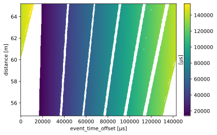

Create a time-of-flight lookup table for ODIN#
[1]:
import scipp as sc
from ess.reduce import time_of_flight
from ess.reduce.nexus.types import AnyRun
from ess.odin.beamline import choppers
Setting up the workflow#
[2]:
source_position = sc.vector([0, 0, 0], unit='m')
disk_choppers = choppers(source_position)
wf = time_of_flight.TofLookupTableWorkflow()
wf[time_of_flight.DiskChoppers[AnyRun]] = disk_choppers
wf[time_of_flight.SourcePosition] = source_position
wf[time_of_flight.NumberOfSimulatedNeutrons] = 200_000 # Increase this number for more reliable results
wf[time_of_flight.SimulationSeed] = 1234
wf[time_of_flight.PulseStride] = 2
wf[time_of_flight.LtotalRange] = sc.scalar(55.0, unit="m"), sc.scalar(65.0, unit="m")
wf[time_of_flight.DistanceResolution] = sc.scalar(0.1, unit="m")
wf[time_of_flight.TimeResolution] = sc.scalar(250.0, unit='us')
wf[time_of_flight.LookupTableRelativeErrorThreshold] = 0.02
Compute the table#
[3]:
table = wf.compute(time_of_flight.TimeOfFlightLookupTable)
table
Downloading file 'ess/ess.h5' from 'https://github.com/scipp/tof-sources/raw/refs/heads/main/1/ess/ess.h5' to '/home/runner/.cache/tof'.
[3]:
scipp.DataArray (938.83 KB)
- distance: 104
- event_time_offset: 573
- distance(distance)float64m54.85, 54.95, ..., 65.050, 65.150
Values:
array([54.85, 54.95, 55.05, 55.15, 55.25, 55.35, 55.45, 55.55, 55.65, 55.75, 55.85, 55.95, 56.05, 56.15, 56.25, 56.35, 56.45, 56.55, 56.65, 56.75, 56.85, 56.95, 57.05, 57.15, 57.25, 57.35, 57.45, 57.55, 57.65, 57.75, 57.85, 57.95, 58.05, 58.15, 58.25, 58.35, 58.45, 58.55, 58.65, 58.75, 58.85, 58.95, 59.05, 59.15, 59.25, 59.35, 59.45, 59.55, 59.65, 59.75, 59.85, 59.95, 60.05, 60.15, 60.25, 60.35, 60.45, 60.55, 60.65, 60.75, 60.85, 60.95, 61.05, 61.15, 61.25, 61.35, 61.45, 61.55, 61.65, 61.75, 61.85, 61.95, 62.05, 62.15, 62.25, 62.35, 62.45, 62.55, 62.65, 62.75, 62.85, 62.95, 63.05, 63.15, 63.25, 63.35, 63.45, 63.55, 63.65, 63.75, 63.85, 63.95, 64.05, 64.15, 64.25, 64.35, 64.45, 64.55, 64.65, 64.75, 64.85, 64.95, 65.05, 65.15]) - distance_resolution()float64m0.10000000000000142
Values:
array(0.1) - error_threshold()float64𝟙0.02
Values:
array(0.02) - event_time_offset(event_time_offset)float64µs0.0, 249.750, ..., 1.426e+05, 1.429e+05
Values:
array([ 0. , 249.75024975, 499.5004995 , 749.25074925, 999.000999 , 1248.75124875, 1498.5014985 , 1748.25174825, 1998.001998 , 2247.75224775, 2497.5024975 , 2747.25274725, 2997.002997 , 3246.75324675, 3496.5034965 , 3746.25374625, 3996.003996 , 4245.75424575, 4495.5044955 , 4745.25474525, 4995.004995 , 5244.75524476, 5494.50549451, 5744.25574426, 5994.00599401, 6243.75624376, 6493.50649351, 6743.25674326, 6993.00699301, 7242.75724276, 7492.50749251, 7742.25774226, 7992.00799201, 8241.75824176, 8491.50849151, 8741.25874126, 8991.00899101, 9240.75924076, 9490.50949051, 9740.25974026, 9990.00999001, 10239.76023976, 10489.51048951, 10739.26073926, 10989.01098901, 11238.76123876, 11488.51148851, 11738.26173826, 11988.01198801, 12237.76223776, 12487.51248751, 12737.26273726, 12987.01298701, 13236.76323676, 13486.51348651, 13736.26373626, 13986.01398601, 14235.76423576, 14485.51448551, 14735.26473526, 14985.01498501, 15234.76523477, 15484.51548452, 15734.26573427, 15984.01598402, 16233.76623377, 16483.51648352, 16733.26673327, 16983.01698302, 17232.76723277, 17482.51748252, 17732.26773227, 17982.01798202, 18231.76823177, 18481.51848152, 18731.26873127, 18981.01898102, 19230.76923077, 19480.51948052, 19730.26973027, 19980.01998002, 20229.77022977, 20479.52047952, 20729.27072927, 20979.02097902, 21228.77122877, 21478.52147852, 21728.27172827, 21978.02197802, 22227.77222777, 22477.52247752, 22727.27272727, 22977.02297702, 23226.77322677, 23476.52347652, 23726.27372627, 23976.02397602, 24225.77422577, 24475.52447552, 24725.27472527, 24975.02497502, 25224.77522478, 25474.52547453, 25724.27572428, 25974.02597403, 26223.77622378, 26473.52647353, 26723.27672328, 26973.02697303, 27222.77722278, 27472.52747253, 27722.27772228, 27972.02797203, 28221.77822178, 28471.52847153, 28721.27872128, 28971.02897103, 29220.77922078, 29470.52947053, 29720.27972028, 29970.02997003, 30219.78021978, 30469.53046953, 30719.28071928, 30969.03096903, 31218.78121878, 31468.53146853, 31718.28171828, 31968.03196803, 32217.78221778, 32467.53246753, 32717.28271728, 32967.03296703, 33216.78321678, 33466.53346653, 33716.28371628, 33966.03396603, 34215.78421578, 34465.53446553, 34715.28471528, 34965.03496503, 35214.78521479, 35464.53546454, 35714.28571429, 35964.03596404, 36213.78621379, 36463.53646354, 36713.28671329, 36963.03696304, 37212.78721279, 37462.53746254, 37712.28771229, 37962.03796204, 38211.78821179, 38461.53846154, 38711.28871129, 38961.03896104, 39210.78921079, 39460.53946054, 39710.28971029, 39960.03996004, 40209.79020979, 40459.54045954, 40709.29070929, 40959.04095904, 41208.79120879, 41458.54145854, 41708.29170829, 41958.04195804, 42207.79220779, 42457.54245754, 42707.29270729, 42957.04295704, 43206.79320679, 43456.54345654, 43706.29370629, 43956.04395604, 44205.79420579, 44455.54445554, 44705.29470529, 44955.04495504, 45204.7952048 , 45454.54545455, 45704.2957043 , 45954.04595405, 46203.7962038 , 46453.54645355, 46703.2967033 , 46953.04695305, 47202.7972028 , 47452.54745255, 47702.2977023 , 47952.04795205, 48201.7982018 , 48451.54845155, 48701.2987013 , 48951.04895105, 49200.7992008 , 49450.54945055, 49700.2997003 , 49950.04995005, 50199.8001998 , 50449.55044955, 50699.3006993 , 50949.05094905, 51198.8011988 , 51448.55144855, 51698.3016983 , 51948.05194805, 52197.8021978 , 52447.55244755, 52697.3026973 , 52947.05294705, 53196.8031968 , 53446.55344655, 53696.3036963 , 53946.05394605, 54195.8041958 , 54445.55444555, 54695.3046953 , 54945.05494505, 55194.80519481, 55444.55544456, 55694.30569431, 55944.05594406, 56193.80619381, 56443.55644356, 56693.30669331, 56943.05694306, 57192.80719281, 57442.55744256, 57692.30769231, 57942.05794206, 58191.80819181, 58441.55844156, 58691.30869131, 58941.05894106, 59190.80919081, 59440.55944056, 59690.30969031, 59940.05994006, 60189.81018981, 60439.56043956, 60689.31068931, 60939.06093906, 61188.81118881, 61438.56143856, 61688.31168831, 61938.06193806, 62187.81218781, 62437.56243756, 62687.31268731, 62937.06293706, 63186.81318681, 63436.56343656, 63686.31368631, 63936.06393606, 64185.81418581, 64435.56443556, 64685.31468531, 64935.06493506, 65184.81518482, 65434.56543457, 65684.31568432, 65934.06593407, 66183.81618382, 66433.56643357, 66683.31668332, 66933.06693307, 67182.81718282, 67432.56743257, 67682.31768232, 67932.06793207, 68181.81818182, 68431.56843157, 68681.31868132, 68931.06893107, 69180.81918082, 69430.56943057, 69680.31968032, 69930.06993007, 70179.82017982, 70429.57042957, 70679.32067932, 70929.07092907, 71178.82117882, 71428.57142857, 71678.32167832, 71928.07192807, 72177.82217782, 72427.57242757, 72677.32267732, 72927.07292707, 73176.82317682, 73426.57342657, 73676.32367632, 73926.07392607, 74175.82417582, 74425.57442557, 74675.32467532, 74925.07492507, 75174.82517483, 75424.57542458, 75674.32567433, 75924.07592408, 76173.82617383, 76423.57642358, 76673.32667333, 76923.07692308, 77172.82717283, 77422.57742258, 77672.32767233, 77922.07792208, 78171.82817183, 78421.57842158, 78671.32867133, 78921.07892108, 79170.82917083, 79420.57942058, 79670.32967033, 79920.07992008, 80169.83016983, 80419.58041958, 80669.33066933, 80919.08091908, 81168.83116883, 81418.58141858, 81668.33166833, 81918.08191808, 82167.83216783, 82417.58241758, 82667.33266733, 82917.08291708, 83166.83316683, 83416.58341658, 83666.33366633, 83916.08391608, 84165.83416583, 84415.58441558, 84665.33466533, 84915.08491508, 85164.83516484, 85414.58541459, 85664.33566434, 85914.08591409, 86163.83616384, 86413.58641359, 86663.33666334, 86913.08691309, 87162.83716284, 87412.58741259, 87662.33766234, 87912.08791209, 88161.83816184, 88411.58841159, 88661.33866134, 88911.08891109, 89160.83916084, 89410.58941059, 89660.33966034, 89910.08991009, 90159.84015984, 90409.59040959, 90659.34065934, 90909.09090909, 91158.84115884, 91408.59140859, 91658.34165834, 91908.09190809, 92157.84215784, 92407.59240759, 92657.34265734, 92907.09290709, 93156.84315684, 93406.59340659, 93656.34365634, 93906.09390609, 94155.84415584, 94405.59440559, 94655.34465534, 94905.09490509, 95154.84515485, 95404.5954046 , 95654.34565435, 95904.0959041 , 96153.84615385, 96403.5964036 , 96653.34665335, 96903.0969031 , 97152.84715285, 97402.5974026 , 97652.34765235, 97902.0979021 , 98151.84815185, 98401.5984016 , 98651.34865135, 98901.0989011 , 99150.84915085, 99400.5994006 , 99650.34965035, 99900.0999001 , 100149.85014985, 100399.6003996 , 100649.35064935, 100899.1008991 , 101148.85114885, 101398.6013986 , 101648.35164835, 101898.1018981 , 102147.85214785, 102397.6023976 , 102647.35264735, 102897.1028971 , 103146.85314685, 103396.6033966 , 103646.35364635, 103896.1038961 , 104145.85414585, 104395.6043956 , 104645.35464535, 104895.1048951 , 105144.85514486, 105394.60539461, 105644.35564436, 105894.10589411, 106143.85614386, 106393.60639361, 106643.35664336, 106893.10689311, 107142.85714286, 107392.60739261, 107642.35764236, 107892.10789211, 108141.85814186, 108391.60839161, 108641.35864136, 108891.10889111, 109140.85914086, 109390.60939061, 109640.35964036, 109890.10989011, 110139.86013986, 110389.61038961, 110639.36063936, 110889.11088911, 111138.86113886, 111388.61138861, 111638.36163836, 111888.11188811, 112137.86213786, 112387.61238761, 112637.36263736, 112887.11288711, 113136.86313686, 113386.61338661, 113636.36363636, 113886.11388611, 114135.86413586, 114385.61438561, 114635.36463536, 114885.11488511, 115134.86513487, 115384.61538462, 115634.36563437, 115884.11588412, 116133.86613387, 116383.61638362, 116633.36663337, 116883.11688312, 117132.86713287, 117382.61738262, 117632.36763237, 117882.11788212, 118131.86813187, 118381.61838162, 118631.36863137, 118881.11888112, 119130.86913087, 119380.61938062, 119630.36963037, 119880.11988012, 120129.87012987, 120379.62037962, 120629.37062937, 120879.12087912, 121128.87112887, 121378.62137862, 121628.37162837, 121878.12187812, 122127.87212787, 122377.62237762, 122627.37262737, 122877.12287712, 123126.87312687, 123376.62337662, 123626.37362637, 123876.12387612, 124125.87412587, 124375.62437562, 124625.37462537, 124875.12487512, 125124.87512488, 125374.62537463, 125624.37562438, 125874.12587413, 126123.87612388, 126373.62637363, 126623.37662338, 126873.12687313, 127122.87712288, 127372.62737263, 127622.37762238, 127872.12787213, 128121.87812188, 128371.62837163, 128621.37862138, 128871.12887113, 129120.87912088, 129370.62937063, 129620.37962038, 129870.12987013, 130119.88011988, 130369.63036963, 130619.38061938, 130869.13086913, 131118.88111888, 131368.63136863, 131618.38161838, 131868.13186813, 132117.88211788, 132367.63236763, 132617.38261738, 132867.13286713, 133116.88311688, 133366.63336663, 133616.38361638, 133866.13386613, 134115.88411588, 134365.63436563, 134615.38461538, 134865.13486513, 135114.88511489, 135364.63536464, 135614.38561439, 135864.13586414, 136113.88611389, 136363.63636364, 136613.38661339, 136863.13686314, 137112.88711289, 137362.63736264, 137612.38761239, 137862.13786214, 138111.88811189, 138361.63836164, 138611.38861139, 138861.13886114, 139110.88911089, 139360.63936064, 139610.38961039, 139860.13986014, 140109.89010989, 140359.64035964, 140609.39060939, 140859.14085914, 141108.89110889, 141358.64135864, 141608.39160839, 141858.14185814, 142107.89210789, 142357.64235764, 142607.39260739, 142857.14285714]) - pulse_period()float64µs71428.57142857142
Values:
array(71428.57142857) - pulse_stride()int642
Values:
array(2) - time_resolution()float64µs249.7502497502497
Values:
array(249.75024975)
- (distance, event_time_offset)float64µsnan, nan, ..., 1.406e+05, 1.413e+05σ = nan, nan, ..., 105.098, 83.862
Values:
array([[ nan, nan, nan, ..., nan, nan, nan], [ nan, nan, nan, ..., nan, nan, nan], [ nan, nan, nan, ..., nan, nan, nan], ..., [141040.16252147, 141479.47622727, 141526.14229235, ..., 140670.6492934 , 140891.23546335, 141040.16252147], [141108.15807377, 141257.31442681, 141701.73516307, ..., 140369.41635372, 140887.23227922, 141108.15807377], [141250.7001882 , 141325.08068418, 141474.46633216, ..., 140433.54408724, 140598.19617592, 141250.7001882 ]], shape=(104, 573))
Variances (σ²):
array([[ nan, nan, nan, ..., nan, nan, nan], [ nan, nan, nan, ..., nan, nan, nan], [ nan, nan, nan, ..., nan, nan, nan], ..., [53995.33499372, 34735.15570359, 41425.78714343, ..., 69571.05570833, 67360.63984632, 53995.33499372], [67568.22258879, 54161.73038044, 29982.52448489, ..., 12204.31701711, 69785.45020596, 67568.22258879], [ 7032.84345425, 67776.1246893 , 54328.38176008, ..., 59354.5581335 , 11045.62984872, 7032.84345425]], shape=(104, 573))
[4]:
table.plot()
[4]:

Save to file#
[5]:
# Save chopper metadata
# TODO: storing the choppers as a PyObject is skipped when saving to disk
table.coords['choppers'] = sc.scalar(disk_choppers)
# Write to file
table.save_hdf5('ODIN-tof-lookup-table.h5')
Writing with dtype=PyObject not implemented, skipping.